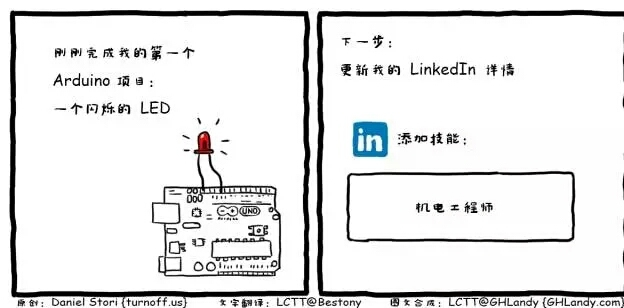

About Me
I am a programmer , the main job is Java & Python. Current work areas of is cloud computing. I like reading funny caricatures in my spare time , It makes me feel happy in my work.

The most interesting time since work is baiyangdian.
关于Java方面
Java工作中及自己研究过的技术
- Spring: aop, ioc, transaction… 与其他框架的整合.
- Spring-boot: jar/war run app， 微服务.
- Spring-mvc: 使用实例
- Sping-data: 使用实例及整合redis集群
- hibernate: 使用实例
- struts2: 使用实例
- mybatis: 使用实例
- spring-struts2-hibernate: 一个简单的ssh框架
- spring-springMVC-mybatis: 一个简单的ssm框架
- spring-redis: spring与redis集群的整合，完全使用注解实现．支持主从，与分布式集群
- spring-mongo：一个
spring+mongo的简单例子 - spring-mq：一个
spring+active-mq基于注解的实现 - zookeeper：命名服务，分布式锁服务．基本的api操作．
- dubbo: springboot+dubbo+zookeeper实现分布式服务
- maven
关于Python方面
主要是基于
Python2.7版本
- django: 基于
django开发的私有云openstack管理平台. - tornado: 使用
tornado+apScheduler+consul开发监控openstack网络状态插件 - flask: 编写内部的NFS开放api
- scrapy: 空闲时间爬点有意思的数据
- 爬虫: 写个爬虫下载一些教学视频及教学资料:
关于数据库
数据库及缓存方面
关于云计算
个人做过
SaaS，PaaS,IaaS,其中还是主要负责WEB开发工作.
- docker: 基本用法，自己基于
docker api实现的简易的dockerDashboard - kubernates: 基于1.2版本的集群(接触的时的最新版本),及部分开发工作.
- OpenStack: 基于L版,N版,O版的dashboard开发及设计工作.